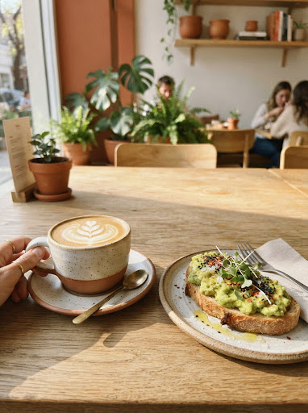
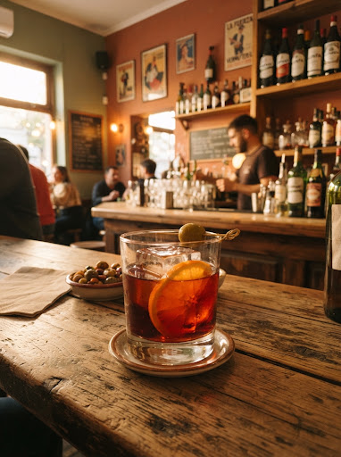
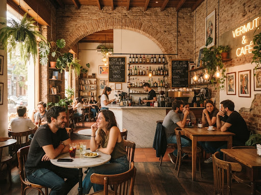
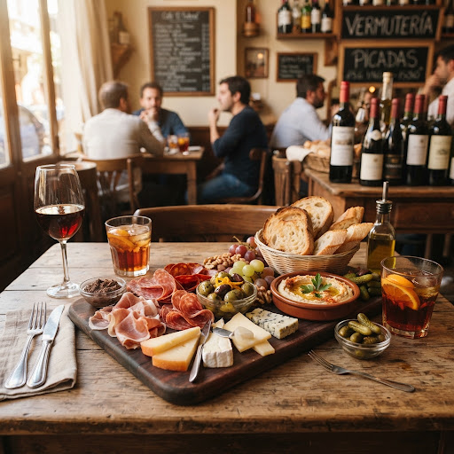

Café de día,
vermú de tarde.
Un refugio en el corazón de Villa Crespo para desacelerar el ritmo. Granos seleccionados de origen, tostados en lotes chicos, y al caer la tarde, vermú artesanal con platitos para compartir bajo la arboleda de Marechal.


Moksha: el arte de hacer una pausa en el barrio.
En sánscrito, Moksha alude a la liberación: soltar las prisas y regalarse un momento de presencia absoluta. En la esquina de Marechal concebimos una atmósfera de luz natural, arcilla y arcos de ladrillo visto donde conviven el silencio matutino con un flat white recién calibrado y el murmullo cálido de la tarde con un vermú rosso bien frío.
Creemos en la vereda como extensión de la sala, en los proveedores locales y en el valor del tiempo no productivo. No apuramos las mesas; acá el reloj se detiene.

Hacé tu reserva
Completá los datos y te preparamos el mensaje para coordinar al instante por WhatsApp con nuestro equipo.
Momentos en Moksha
La luz que se cuela por el ventanal, el aroma a molienda fresca y el primer sorbo de vermú al atardecer.

Lo que dicen en el barrio
"El mejor flat white de Marechal. La luz que entra a la mañana combinada con la tranquilidad del lugar es insuperable para leer o trabajar sin el estrés habitual."
"La transición al atardecer es mágica. Pedirse un vermú con la tabla de quesos y sentarse en la vereda a ver caer el sol es un clásico de fin de semana absoluto."
"Atención cálida, respetuosa y detallista. El tostón de palta y la música suave te bajan mil revoluciones. Un oasis necesario en la ciudad."
Vení a conocernos
Estamos en una cuadra serena de Villa Crespo, rodeados de jacarandás y a pasos del Parque Centenario.